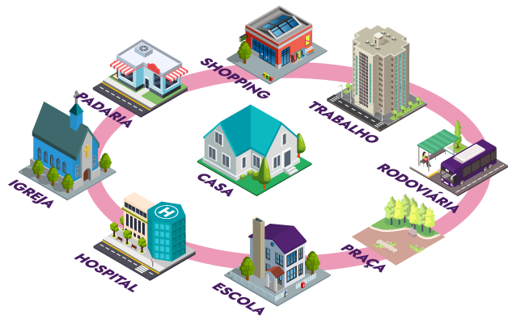

CITYRURAL
INSTAGRAM

BENEFÍCIOS DE IR PARA A CIDADE
A CITYRURAL é um site que ajuda as pessoas a encontrar motivos para vir para cidade.
Nosso site é construído para mostrar benefícios e ajudar pessoas do meio rural .
Use o site para tirar as suas próprias conclusões
Use a CITYRURAL para se INFORMAR e se PREPARAR para a cidade
ENTENDA SOBRA A CIDADE
A CITYRURAL ajuda a te mostra como é o movimento nas cidades e mostra como viver nelas.
Construa seu plano de ida a cidade
A CITYRURAL apresenta ideias e espaços que podem deixar você interessado. Você pode usar esses espaços para conhecer novas pessoas e criar conexões.
FALE CONOSCO
(XX)XXXX-XXXX
AV João Gualberto, 250, Centro, Curitiba-PR
victohugotumps@gmail.com